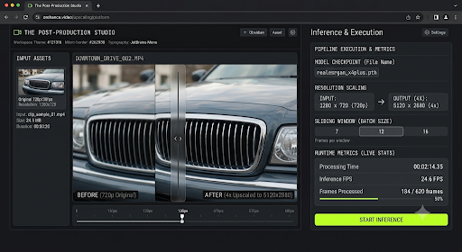

Input Assets
4 items
720pclip_sample_01.mp4
Downtown Drive
24.5 MB
 1080p
1080p
cyber_alley_night.mp4
Neon Low-light
48.2 MB
 480p
480p
vintage_portrait_crop.mp4
Face Restoration
12.8 MB
 720p
720p
sakuga_battle_720.mp4
2D Animation
31.0 MB
Input: clip_sample_01.mp4
Resolution: 1280 x 720 (720p)
Frame Rate: 29.97 fps
Size: 24.5 MB
Duration: 00:00:20 (620f)
DOWNTOWN_DRIVE_002.MP4
Zoom:

BEFORE (720p Original)

AFTER (4x Upscaled to 5120x2880)
8X MAGNIFIER
TC:
00:00:06.12
|
184 / 620 f
00:00:00
00:00:05
00:00:06 (Cur)
00:00:10
00:00:15
00:00:20
Inference & Execution
Pipeline Execution & Metrics TensorRT 10.1
INPUT:
1280 x 720 (720p)
→
OUTPUT (4X):
5120 x 2880
Runtime Metrics (Live Stats)
READY
Processing Time
00:02:14.35
Inference FPS
24.6 FPS
Frames Processed
184 / 620 frames
Hardware VRAM / Temp
6.4 GB / 64°C
ETA: 00:01:45
50%
TERMINAL LOG
[INIT] TensorRT engine compiled with FP16 enabled.
[LOAD] Checkpoint: realesrgan_x4plus.pth (RRDBNet 23 blocks)
[WARMUP] CUDA context initialized. Memory pinned.
[READY] Pipeline standing by for inference start.